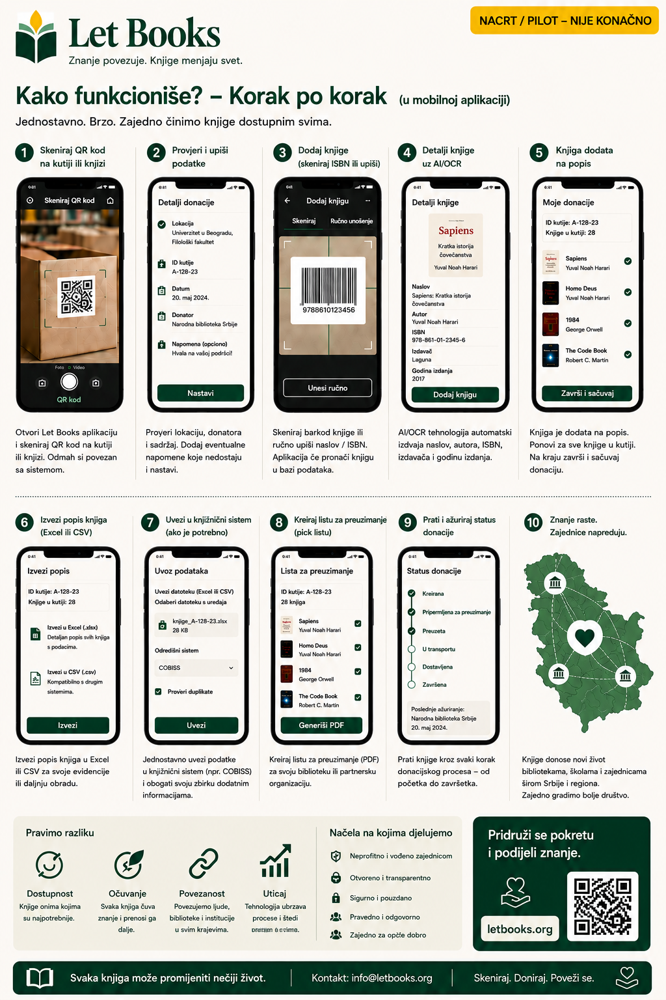

Tekst i tokovi rada na ovoj stranici opisuju smer projekta, a ne završenu produkcijsku implementaciju.
Vodič za pojedince
Popišite prvu kutiju bez pretvaranja svega u veliki projekat.
Ova stranica je za privatne donatore, porodice, volontere i manje organizacije koje žele da sačuvaju ozbiljne knjige i kasnije ih lakše ponude i pronađu.

Kada je ovaj vodič za vas
- Imate knjige kod kuće, u skladištu ili kancelariji.
- Želite da znate šta je u svakoj kutiji pre ponude.
- Treba vam mobilni tok rada sa manje kucanja.
- Kasnije možda donirate jednoj ili više biblioteka.
Kako izgleda uspeh
- Skenirate kutiju i vidite njen sadržaj.
- Dodate novu knjigu za nekoliko sekundi.
- Izvezete urednu listu za pregled.
- Ponovo pronađete tražene primerke kada dođe vreme za preuzimanje.
Brzi tok rada
Prvi prolaz mora biti dovoljno brz za stvarne police i stvarne kutije.
Skenirajte QR kutije
Otvorite tačan kontekst lokacije pre unosa.
Fotografišite naslovnicu
Naslovnica ostaje glavni vizuel za pregledanje.
Skenirajte ili upišite ISBN
Ako je vidljiv, iskoristite ga. Ako nije, sačuvajte pa obogatite kasnije.
Sačuvajte i nastavite
Brzi unos ne sme da traži potpunu bibliografiju pre sledeće knjige.
Izvezite za pregled
Pripremite seriju za biblioteku ili partnera.
Napravite listu preuzimanja
Tražene knjige grupišu se po sobi, polici i kutiji.
Šta je najvažnije zabeležiti
Naslov, autora, godinu kada je vidljiva, stanje primerka i tačnu lokaciju. To su podaci koji kasnije donaciju čine izvodljivom.
AI kao pomoćnik, ne autoritet
Ako OCR ili predlozi metapodataka budu uključeni kasnije, tretirajte ih kao predloge koji traže ljudsku proveru.
Primer: Porodica nasledi profesorovu tehničku biblioteku, označi kutije, fotografiše naslovnice, izveze jednu seriju za pregled i kasnije pronađe tačno one primerke koje biblioteka želi.